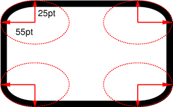
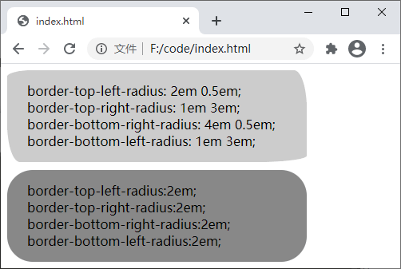
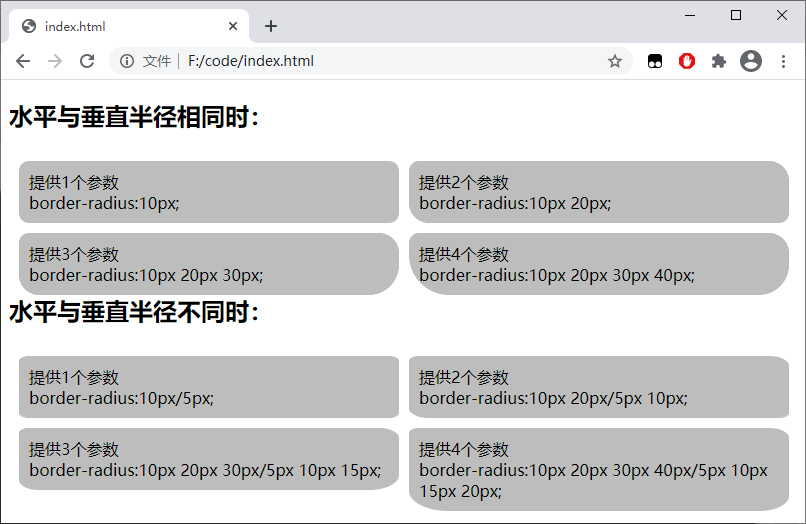

CSS圆角（border-radius）完全解析
在制作网页的过程中，有时我们可能需要实现圆角的效果，以前的做法是通过切图（将设计稿切成便于制作成页面的图片），使用多个背景图像来实现圆角。在 CSS3 出现之后就不需要这么麻烦了，CSS3 中提供了一系列属性来设置元素的圆角效果，如下所示：
上述函数的可选值如下表所示：
【示例】使用四个 border-*-radius 属性为元素设置圆角效果：
【示例】使用 border-radius 属性为元素设置圆角效果：
- border-top-left-radius：为元素左上角设置圆角效果；
- border-top-right-radius：为元素右上角设置圆角效果；
- border-bottom-right-radius：为元素右下角设置圆角效果；
- border-bottom-left-radius：为元素左下角设置圆角效果；
- border-radius：上面四个属性的简写形式，可以同时为元素的四个角设置圆角效果。
上述函数的可选值如下表所示：
| 值 | 描述 |
|---|---|
| length | 通过数值加单位的形式定义圆角的形状 |
| percentage | 以百分比的形式定义圆角的形状 |
border-*-radius
通过上面的介绍我们知道，通过 border-*-radius 系列函数能够分别为元素的四个角设置圆角效果，函数的语法格式如下：border-*-radius：[ <length> | <percentage> ]{1,2}
语法的含义为，需要为 border-*-radius 属性提供 1~2 个参数，参数之间使用空格进行分隔。其中第一个参数表示圆角水平方向的半径或半轴，第二个参数表示圆角垂直方向的半径或半轴，如果省略第二个参数，那么该参数将直接沿用第一个参数的值。

图：元素四角
图：元素四角
【示例】使用四个 border-*-radius 属性为元素设置圆角效果：
<!DOCTYPE html>
<html lang="en">
<head>
<style>
div {
width: 350px;
height: 100px;
padding: 15px 0px 0px 25px;
}
.one {
border-top-left-radius: 2em 0.5em;
border-top-right-radius: 1em 3em;
border-bottom-right-radius: 4em 0.5em;
border-bottom-left-radius: 1em 3em;
background-color: #CCC;
margin-bottom: 10px;
}
.two {
border-top-left-radius:2em;
border-top-right-radius:2em;
border-bottom-right-radius:2em;
border-bottom-left-radius:2em;
background-color: #888;
}
</style>
</head>
<body>
<div class="one">
border-top-left-radius: 2em 0.5em;<br>
border-top-right-radius: 1em 3em;<br>
border-bottom-right-radius: 4em 0.5em;<br>
border-bottom-left-radius: 1em 3em;
</div>
<div class="two">
border-top-left-radius:2em;<br>
border-top-right-radius:2em;<br>
border-bottom-right-radius:2em;<br>
border-bottom-left-radius:2em;
</div>
</body>
</html>
运行结果如下图所示：

图：border-*-radius 属性演示
图：border-*-radius 属性演示
border-radius
border-radius 属性是 border-top-left-radius、border-top-right-radius、border-bottom-right-radius、border-bottom-left-radius 四个属性的简写形式，使用 border-radius 可以同时设置四个 border-*-radius 属性。border-radius 属性的格式如下：border-radius：[ <length> | <percentage> ]{1,4} [ / [ <length> | <percentage> ]{1,4} ]?
语法说明如下：-
border-radius 属性可以接收两组参数，参数之间使用斜杠
/进行分隔，每组参数都允许设置 1~4 个参数值，其中第一组参数代表圆角水平方向上的半径或半轴，第二组参数代表圆角垂直方向上的半径或半轴，如果省略第二组参数的值，那么该组参数将直接沿用第一组参数的值。 - 第一组参数中，如果提供全部的四个参数，那么将按照上左 top-left、上右 top-right、下右 bottom-right、下左 bottom-left 的顺序作用于元素的四个角；如果提供三个参数，那么第一个参数将作用于元素的左上角 top-left，第二个参数将作用于元素的右上角 top-right 和左下角 bottom-left，第三个参数将作用于元素的右下角 bottom-right；如果提供两个参数，那么第一个参数将作用于元素的左上角 top-left 和右下角 bottom-right，第二个参数将作用于元素的右上角 top-right 和左下角 bottom-left；如果只提供一个参数，那么该参数将同时作用于元素的四个角。
- 第二组参数同样遵循第一组参数的规律，只是作用的方向不同。
【示例】使用 border-radius 属性为元素设置圆角效果：
<!DOCTYPE html>
<html>
<head>
<style>
ul {
margin: 0;
padding: 0;
}
li {
list-style: none;
margin: 10px 0 0 10px;
padding: 10px;
width: 200px;
float: left;
background: #bbb;
}
h2 {
clear: left;
}
.test .one {
border-radius: 10px;
}
.test .two {
border-radius: 10px 20px;
}
.test .three {
border-radius: 10px 20px 30px;
}
.test .four {
border-radius: 10px 20px 30px 40px;
}
.test2 .one {
border-radius: 10px/5px;
}
.test2 .two {
border-radius: 10px 20px/5px 10px;
}
.test2 .three {
border-radius: 10px 20px 30px/5px 10px 15px;
}
.test2 .four {
border-radius: 10px 20px 30px 40px/5px 10px 15px 20px;
}
</style>
</head>
<body>
<h2>水平与垂直半径相同时：</h2>
<ul class="test">
<li class="one">提供1个参数<br>border-radius:10px;</li>
<li class="two">提供2个参数<br>border-radius:10px 20px;</li>
<li class="three">提供3个参数<br>border-radius:10px 20px 30px;</li>
<li class="four">提供4个参数<br>border-radius:10px 20px 30px 40px;</li>
</ul>
<h2>水平与垂直半径不同时：</h2>
<ul class="test2">
<li class="one">提供1个参数<br>border-radius:10px/5px;</li>
<li class="two">提供2个参数<br>border-radius:10px 20px/5px 10px;</li>
<li class="three">提供3个参数<br>border-radius:10px 20px 30px/5px 10px 15px;</li>
<li class="four">提供4个参数<br>border-radius:10px 20px 30px 40px/5px 10px 15px 20px;</li>
</ul>
</body>
</html>
运行结果如下图所示：

图：border-radius 属性演示
图：border-radius 属性演示
关注公众号「站长严长生」，在手机上阅读所有教程，随时随地都能学习。内含一款搜索神器，免费下载全网书籍和视频。

微信扫码关注公众号